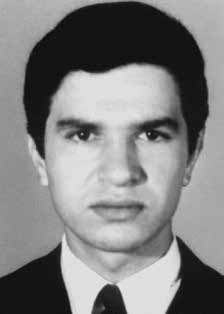

Luiz
Almeida
Araújo
CIRCUNSTÂNCIAS DA MORTE
Luiz Almeida Araújo é considerado desaparecido político desde o dia 24 de junho de 1971, data em que conduziu Paulo de Tarso Celestino – então dirigente nacional da ALN, que seria preso no mês seguinte – para um encontro com um agente infiltrado, Cabo Anselmo, nas imediações da Avenida Angélica em São Paulo. No dia 27 de junho, três dias após o ocorrido, a mãe de Luiz foi informada de seu desaparecimento, por meio de um telefonema anônimo. Entre os meses de junho e julho, várias pessoas próximas a Luiz Almeida e sua família foram presas e interrogadas pela polícia. Uma delas afirmou ter ouvido durante horas os gritos de Luiz nas dependências do DOI-CODI/SP. A partir de então a mãe, na companhia do filho Manoel, partiu em busca de notícias sobre o seu paradeiro. Em visita ao DOI-CODI, Manoel foi intimado a prestar depoimento, que durou horas, e obrigado a assinar uma declaração afirmando que entregaria tanto seu irmão Luiz, quanto sua irmã Maria do Amparo Almeida Araújo, caso obtivesse informações sobre os respectivos paradeiros. A mãe e o irmão de Luiz Almeida foram também ao DOPS, onde nada conseguiram encontrar. Em visita à 2ª Auditoria Militar de São Paulo, foram informados de que Luiz se encontrava foragido, clandestino. Documentos comprovam que Luiz Almeida passou a ser fichado constantemente pelos órgãos de repressão a partir do incidente envolvendo o empréstimo de seu automóvel para a ação da ALN em 1968. Segundo depoimento de Adelino Nunes de Souza, Luiz Almeida Araújo possuía uma frota de taxi em parceria com Luiz de Mello Moura e Maria Angela Montolar Colloca. Os três costumavam abastecer os automóveis no posto de gasolina onde o depoente era vigia noturno. Em seu depoimento, Adelino sugere a participação do trio no assalto ao Banco da Av. Santo Amaro, o que teria ocasionado o afastamento desses do local e a liquidação da frota, por Luis de Mello Moura. No histórico constante do processo apresentado à Comissão de Anistia revela-se que, como Luiz Almeida estava foragido, requisitou que Luiz de Mello liquidasse a frota de taxi. Em 29 agosto de 1968, a Delegacia Especializada de Crimes contra o Patrimônio solicitou sua localização, após depoimento de seu ex-funcionário, Luiz de Melo Moura, atestando sua participação no caso. Ordem de serviço emitida em 25 de setembro deste mesmo ano alega que o acusado, Luiz Almeida Araújo, “envolvido em dificuldades com a polícia”, deixou de frequentar seu apartamento, não sendo possível, portanto, identificar o seu paradeiro. De acordo com a narrativa oficial sobre o acontecimento, foi nessa época que, após breve detenção, Luiz Almeida Araújo partiu para treinamento em Cuba, retornando ao país em meados de 1970. Em 21 de dezembro daquele ano, o DOPS emitiu documento de qualificação indireta em nome de Luiz Almeida Araújo, o qual afirma ignorar sua localização. No dia 28 de janeiro de 1971, a Justiça Militar da 2ª Auditoria da 2ª Região Militar de São Paulo decretou sua prisão preventiva. De acordo com o Dossiê Ditadura, foi encontrado no antigo arquivo do DOPS/RJ um documento do Ministério do Exército de 2/8/1971 – data posterior em alguns dias ao seu desaparecimento –, assinado pelo então comandante do I Exército, general Sylvio Frota, e enviado ao DOPS/RJ, afirmando que, após busca na residência de Luiz Almeida Araújo, este ainda se encontrava foragido. Documento emitido em 1972 pelo Major Ary Canavó do 1º Regimento da Escola de Cavalaria do I Exército ao diretor do DOPS solicitava a prisão de elementos subversivos ligados a Gilson Ribeiro da Silva (“Poeta”), listando 9 nomes, entre os quais o de Luiz Almeida Araújo. No entanto, relatório do Ministério da Marinha de 1993 declara que, no mesmo mês de agosto de 1971, Luiz “teria sido dado como morto”. Em novembro de 1973, Luiz foi absolvido por insuficiência de provas em um processo da 2ª Auditoria Militar. Em 27 de fevereiro de 2013 foi realizada pela Comissão Estadual da Verdade de São Paulo uma audiência pública sobre o caso com a participação de sua irmã, Maria Amparo Araújo. Até a presente data Luiz Almeida Araújo permanece desaparecido.
Luiz Almeida Araújo has been considered a political missing person since June 24, 1971, the date on which he took Paulo de Tarso Celestino – then national leader of the ALN, who would be arrested the following month – to a meeting with an undercover agent, Cabo Anselmo, near Avenida Angélica in São Paulo. On June 27, three days after the incident, Luiz's mother was informed of his disappearance, through an anonymous phone call. Between the months of June and July, several people close to Luiz Almeida and his family were arrested and questioned by the police. One of them claimed to have heard Luiz's screams for hours on the DOI-CODI/SP premises. From then on, the mother, in the company of her son Manoel, set out in search of news about her whereabouts. During a visit to DOI-CODI, Manoel was summoned to give a statement, which lasted hours, and forced to sign a statement stating that he would hand over both his brother Luiz and his sister Maria do Amparo Almeida Araújo, if he obtained information about their respective whereabouts. Luiz Almeida's mother and brother also went to the DOPS, where they could find nothing. During a visit to the 2nd Military Audit of São Paulo, they were informed that Luiz was on the run, clandestine. Documents prove that Luiz Almeida began to be constantly booked by law enforcement agencies after the incident involving the loan of his car for ALN action in 1968. According to Adelino Nunes de Souza's testimony, Luiz Almeida Araújo owned a taxi fleet in partnership with Luiz de Mello Moura and Maria Angela Montolar Colloca. The three used to fill up their cars at the gas station where the witness was a night watchman. In his testimony, Adelino suggests the trio's participation in the robbery of the Bank on Av. Santo Amaro, which would have led to their removal from the place and the liquidation of the fleet, by Luis de Mello Moura. The history contained in the case presented to the Amnesty Commission reveals that, as Luiz Almeida was on the run, he requested that Luiz de Mello liquidate the taxi fleet. On August 29, 1968, the Specialized Police Station for Crimes against Property requested his location, following testimony from his former employee, Luiz de Melo Moura, attesting to his participation in the case. Service order issued on September 25 of this same year alleges that the accused, Luiz Almeida Araújo, “involved in difficulties with the police”, stopped visiting his apartment, making it impossible, therefore, to identify his whereabouts. According to the official narrative about the event, it was at that time that, after a brief detention, Luiz Almeida Araújo left for training in Cuba, returning to the country in mid-1970. On December 21 of that year, the DOPS issued an indirect qualification document in the name of Luiz Almeida Araújo, who claims to be unaware of his location. On January 28, 1971, the Military Court of the 2nd Audit of the 2nd Military Region of São Paulo decreed his preventive detention. According to the Ditadura Dossier, a document from the Ministry of the Army dated 2/8/1971 – a date a few days later than his disappearance – was found in the old DOPS/RJ archive, signed by the then commander of the 1st Army, General Sylvio Frota, and sent to the DOPS/RJ, stating that, after searching Luiz Almeida Araújo's residence, he was still at large. Document issued in 1972 by Major Ary Canavó of the 1st Regiment of the Cavalry School of the 1st Army to the director of the DOPS requested the arrest of subversive elements linked to Gilson Ribeiro da Silva (“Poet”), listing 9 names, including Luiz Almeida Araújo. However, a 1993 report from the Ministry of the Navy states that, in the same month of August 1971, Luiz “was presumed dead”. In November 1973, Luiz was acquitted due to insufficient evidence in a process of the 2nd Military Audit. On February 27, 2013, the São Paulo State Truth Commission held a public hearing on the case with the participation of his sister, Maria Amparo Araújo. To date, Luiz Almeida Araújo remains missing.
Luiz Almeida Araújo es considerado desaparecido político desde el 24 de junio de 1971, fecha en que llevó a Paulo de Tarso Celestino –entonces líder nacional de la ALN, que sería detenido el mes siguiente– a una reunión con un agente encubierto, Cabo Anselmo, cerca de la Avenida Angélica de São Paulo. El 27 de junio, tres días después del incidente, la madre de Luiz fue informada de su desaparición, a través de una llamada telefónica anónima. Entre los meses de junio y julio, varias personas cercanas a Luiz Almeida y su familia fueron detenidas e interrogadas por la policía. Uno de ellos afirmó haber escuchado los gritos de Luiz durante horas en las instalaciones del DOI-CODI/SP. A partir de entonces, la madre, en compañía de su hijo Manoel, partió en busca de noticias sobre su paradero. Durante una visita al DOI-CODI, Manoel fue citado a prestar declaración, que duró horas, y obligado a firmar una declaración en la que afirmaba que entregaría tanto a su hermano Luiz como a su hermana Maria do Amparo Almeida Araújo, si obtenía información sobre su paradero respectivo. La madre y el hermano de Luiz Almeida también acudieron al DOPS, donde no encontraron nada. Durante una visita a la Segunda Auditoría Militar de São Paulo, fueron informados que Luiz se encontraba prófugo, clandestino. Los documentos prueban que Luiz Almeida comenzó a ser fichado constantemente por las fuerzas del orden después del incidente del préstamo de su automóvil para la acción de la ALN en 1968. Según el testimonio de Adelino Nunes de Souza, Luiz Almeida Araújo poseía una flota de taxis en sociedad con Luiz de Mello Moura y Maria Angela Montolar Colloca. Los tres solían repostar sus coches en la gasolinera donde el testigo era vigilante nocturno. En su testimonio, Adelino sugiere la participación del trío en el robo al Banco de la Av. Santo Amaro, lo que habría supuesto su traslado del lugar y la liquidación de la flota, por parte de Luis de Mello Moura. Los antecedentes contenidos en el caso presentado ante la Comisión de Amnistía revelan que Luiz Almeida, estando prófugo, solicitó a Luiz de Mello liquidar la flota de taxis. El 29 de agosto de 1968, la Comisaría Especializada en Delitos contra la Propiedad solicitó su localización, tras el testimonio de su ex empleado, Luiz de Melo Moura, que daba fe de su participación en el caso. La orden de notificación emitida el 25 de septiembre de este mismo año alega que el imputado Luiz Almeida Araújo, “envuelto en dificultades con la policía”, dejó de visitar su apartamento, imposibilitando, por tanto, identificar su paradero. Según la narración oficial sobre el hecho, fue en ese momento que, luego de una breve detención, Luiz Almeida Araújo partió para entrenarse en Cuba, regresando al país a mediados de 1970. El 21 de diciembre de ese año, el DOPS emitió un documento de calificación indirecta a nombre de Luiz Almeida Araújo, quien afirma desconocer su ubicación. El 28 de enero de 1971, el Tribunal Militar de Segunda Auditoría de la 2ª Región Militar de São Paulo decretó su prisión preventiva. Según el Dossier Ditadura, en el antiguo archivo del DOPS/RJ fue encontrado un documento del Ministerio del Ejército fechado el 8/02/1971 – fecha algunos días después de su desaparición – firmado por el entonces comandante del 1.º Ejército, general Sylvio Frota, y enviado al DOPS/RJ, afirmando que, después de allanar la residencia de Luiz Almeida Araújo, éste seguía prófugo. Documento emitido en 1972 por el Mayor Ary Canavó del 1.º Regimiento de la Escuela de Caballería del 1.º Ejército al director del DOPS solicitaba la detención de elementos subversivos vinculados a Gilson Ribeiro da Silva (“Poeta”), enumerando 9 nombres, entre ellos Luiz Almeida Araújo. Sin embargo, un informe del Ministerio de Marina de 1993 afirma que, en el mismo mes de agosto de 1971, Luiz “era dado por muerto”. En noviembre de 1973, Luiz fue absuelto por insuficiencia de pruebas en un proceso de la Segunda Auditoría Militar. El 27 de febrero de 2013, la Comisión de la Verdad del estado de São Paulo celebró una audiencia pública sobre el caso con la participación de su hermana, María Amparo Araújo. Hasta la fecha, Luiz Almeida Araújo sigue desaparecido.